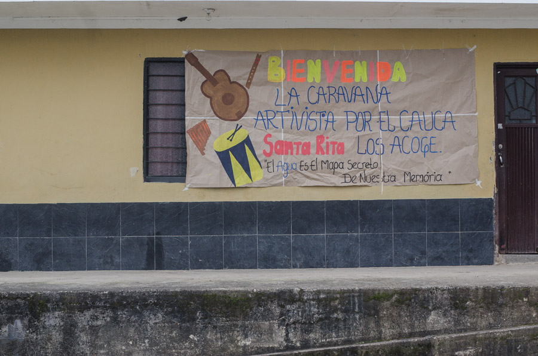

<!DOCTYPE html>
<html lang="en">
<head>
    <meta charset="UTF-8">
    <meta name="viewport" content="width=device-width, initial-scale=1.0">
    <title>Caravana Artivista</title>
    <link rel="Stylesheet" href="leaflet.css">
    <link rel="Stylesheet" href="ejemplo.css">
    <script src="leaflet.js"></script>
    <script src="provider.js"></script>
    <script src="data/dpto_cauca.geojson"></script>
    <script src="data/cerro_01.geojson"></script>
    <script src="data/cerro_03.geojson"></script>        
    <script src="data/predial.geojson"></script>
    <script src="data/recorrido.geojson"></script>
    <script src="data/la_carolina.geojson"></script>
    <script src="data/vias_2.geojson"></script>
    <script src="data/sendero_a.geojson"></script>
    <script src="data/sendero_b.geojson"></script>
    <script src="data/vias_1.geojson"></script>
    <script src="data/vias_2.geojson"></script>
    <script src="data/resguardos_alto_san_juan.geojson"></script>
    <script src="data/rios_san_juan.geojson"></script>
    <script src="data/centros_pobla.geojson"></script>
    <script src="data/produccion_petroleo.geojson"></script>
    <script src="https://unpkg.com/leaflet-responsive-popup@0.6.4/leaflet.responsive.popup.js"></script>
    <link rel="stylesheet" href="https://unpkg.com/leaflet-responsive-popup@0.6.4/leaflet.responsive.popup.css" />
    <link rel="stylesheet" href="https://unpkg.com/leaflet-responsive-popup@0.6.4/leaflet.responsive.popup.rtl.css" />

</head>
<body>
    <div id='mapa'></div>
<script>
   
   var mymap = L.map('mapa').setView([2.563585, -76.510663], 9);
   
   2.563585, -76.510663

    var satelite = L.tileLayer('https://server.arcgisonline.com/ArcGIS/rest/services/World_Imagery/MapServer/tile/{z}/{y}/{x}', {
	    attribution: ''
    }).addTo(mymap);
    

    var OSM = L.tileLayer('https://{s}.tile.openstreetmap.fr/osmfr/{z}/{x}/{y}.png', {
	maxZoom: 20,
	attribution: '&copy; Openstreetmap France | &copy; <a href="https://www.openstreetmap.org/copyright">OpenStreetMap</a> contributors'
}).addTo(mymap);

    
    function caucaStyle(feature) {
    return {
        fillColor: 'red',
        weight: 2,
        opacity: 1,
        color: 'black',
        dashArray: '1',
        fillOpacity: 0.1
    };
}
    var cauca =L.geoJson(cauca,{style: caucaStyle}).addTo(mymap);    

var popup = L.responsivePopup().setContent('A pretty CSS3 responsive popup.<br> Easily customizable.');

function cerroStyle(feature) {
    return {
        fillColor: 'red',
        weight: 2,
        opacity: 1,
        color: 'red',
        dashArray: '6',
        fillOpacity: 0.1
    };
}

    function recorridoStyle(feature) {
    return {
        fillColor: 'red',
        weight: 2,
        opacity: 1,
        color: 'red',
        dashArray: '6',
        fillOpacity: 0.1
    };
}
    var recorrido =L.geoJson(recorrido,{style: recorridoStyle}).addTo(mymap);  
    
    function carolinaStyle(feature) {
    return {
        fillColor: 'red',
        weight: 2,
        opacity: 1,
        color: 'red',
        dashArray: '6',
        fillOpacity: 0.1
    };
}
    var la_carolina =L.geoJson(la_carolina,{style: carolinaStyle}).addTo(mymap);  
    
         
    function cerroStyle(feature) {
    return {
        fillColor: 'red',
        weight: 1,
        opacity: 1,
        color: 'red',
        dashArray: '2',
        fillOpacity: 0.1
    };
}
    var cerro_01 =L.geoJson(cerro_01,{style: cerroStyle}).addTo(mymap);  
    var cerro_03 =L.geoJson(cerro_03,{style: cerroStyle}).addTo(mymap);  

    var betzabeIcon = L.icon({
        iconUrl: './images/betzabe.png',
 
        iconSize: [50, 70],
        iconAnchor: [20, 64],


    });
    var cerroIcon = L.icon({
        iconUrl: './images/cerro.png',
 
        iconSize: [50, 50],
        iconAnchor: [20, 54],


    });

    var quebradaIcon = L.icon({
        iconUrl: './images/quebrada.png',
 
        iconSize: [50, 50],
        iconAnchor: [20, 54],


    });
     var chivaIcon = L.icon({
        iconUrl: './images/chiva.png',
        shadowUrl: './images/chiva_sombra.png',
        iconSize: [50, 51],
        shadowSize: [60, 61],
        iconAnchor: [20, 34],
        shadowAnchor: [9, 50],
    });
    var chivaIcon_2 = L.icon({
        iconUrl: './images/chiva_2.png',
        shadowUrl: './images/chiva_sombra.png',
        iconSize: [50, 51],
        shadowSize: [60, 61],
        iconAnchor: [20, 34],
        shadowAnchor: [9, 50],
    });

        var point = [3.174470, -76.461280];
        var marker =L.marker(point, {icon: chivaIcon}).addTo(mymap);
        var myMarker = L.marker(point, {icon: chivaIcon});
        myMarker.addTo(mymap);
        myMarker.bindPopup(
            '<b>Villarica</b> <div><image style="width: 100%"  </div>',
            {minWidth:300}
        );
   
        var point2 = [3.222442, -76.313672];
        var marker2 =L.marker(point2, {icon: chivaIcon}).addTo(mymap);
        var myMarker2 = L.marker(point2, {icon: chivaIcon});
        myMarker2.addTo(mymap);
        myMarker2.bindPopup(
            '<b>Padilla</b> <div><image style="width: 100%"  <p>Vídeo realizado por Arturo Nacavera (embera chamí) en el marco del Convenio sobre Patrimonio Cultural Inmaterial desde la perspectiva local (2015)<a href="https://www.youtube.com/watch?v=uH0fchAKCh4"</a> https://www.youtube.com/watch?v=uH0fchAKCh4 </p></div>',
            {minWidth:300}
        );
        var point3 = [2.955827, -76.269356];
        var marker3 =L.marker(point3, {icon: chivaIcon}).addTo(mymap);
        var myMarker3 = L.marker(point3,{icon: chivaIcon});
        myMarker3.addTo(mymap);
        myMarker3.bindPopup(
            '<b>Toribio</b> <div><image style="width: 100%"  <p> </p></div>',
            {minWidth:300}
        );

        var point4 = [2.069603, -76.847891];
        var marker4 =L.marker(point4, {icon: chivaIcon}).addTo(mymap);
        var myMarker4 = L.marker(point4, {icon: chivaIcon});
        myMarker4.addTo(mymap);
        myMarker4.bindPopup(
            '<b>Santa Rita, La Vega</b><div><image style="width: 100%"  <p>Vídeo realizado por Arturo Nacavera (embera chamí) en el marco del Convenio sobre Patrimonio Cultural Inmaterial desde la perspectiva local (2015)<a href="https://www.youtube.com/watch?v=uH0fchAKCh4"</a> https://www.youtube.com/watch?v=uH0fchAKCh4 </p></div>',
            {minWidth:300}
        );
        var point5 = [1.975831, -76.956996];
        var marker5 =L.marker(point5, {icon: chivaIcon}).addTo(mymap);
        var myMarker5 = L.marker(point5, {icon: chivaIcon});
        myMarker5.addTo(mymap);
        myMarker5.bindPopup(
            '<b>Lerma, Bolívar</b> <div><image style="width: 100%"  <p>Vídeo realizado por Arturo Nacavera (embera chamí) en el marco del Convenio sobre Patrimonio Cultural Inmaterial desde la perspectiva local (2015)<a href="https://www.youtube.com/watch?v=uH0fchAKCh4"</a> https://www.youtube.com/watch?v=uH0fchAKCh4 </p></div>',
            {minWidth:300}
        );
        var point6 = [3.174088, -76.261149];
        var marker6 =L.marker(point6, {icon: chivaIcon_2}).addTo(mymap);
        var myMarker6 = L.marker(point6, {icon:chivaIcon_2});
        myMarker6.addTo(mymap);
        myMarker6.bindPopup(
            '<b>Corinto</b>',
            {minWidth:300}
        );
        var point7 = [2.097428, -76.800529];
        var marker7 =L.marker(point7,{icon:chivaIcon_2}).addTo(mymap);
        var myMarker7 = L.marker(point7, {icon:chivaIcon_2});
        myMarker7.addTo(mymap);
        myMarker7.bindPopup(
            '<b>Albanía, La Vega</b><div><image style="width: 100%"  <p>Vídeo realizado por Arturo Nacavera (embera chamí) en el marco del Convenio sobre Patrimonio Cultural Inmaterial desde la perspectiva local (2015)<a href="https://www.youtube.com/watch?v=uH0fchAKCh4"</a> https://www.youtube.com/watch?v=uH0fchAKCh4 </p></div>',
            {minWidth:300}
        );
        var point7 = [3.22840029, -76.33161894];
        var marker7 =L.marker(point7, {icon: betzabeIcon}).addTo(mymap);
        var myMarker7 = L.marker(point7, {icon: betzabeIcon});
        myMarker7.addTo(mymap);
        myMarker7.bindPopup(
          '<b>Finca tradicional Betzabé, resistir al monocultivo de caña</b> <div><image style="width: 100%"  <p> </p></div>',
            {minWidth:300}
        );
        var point8 = [1.995652, -76.946112];
        var marker8 =L.marker(point8, {icon: cerroIcon}).addTo(mymap);
        var myMarker8 = L.marker(point8, {icon: cerroIcon});
        myMarker8.addTo(mymap);
        myMarker8.bindPopup(
          '<b>Cerro tutelar de Lerma</b> <div><image style="width: 100%"  <p> </p></div>',
            {minWidth:300}
        );

        var point9 = [2.056851, -76.848027];
        var marker9 =L.marker(point9, {icon: quebradaIcon}).addTo(mymap);
        var myMarker9 = L.marker(point9, {icon: quebradaIcon});
        myMarker9.addTo(mymap);
        myMarker9.bindPopup(
          '<b>Bosque La Carolina</b> <div><image style="width: 100%"  <p> </p></div>',
            {minWidth:300}
        );

   
   
var polygon = L.polygon([
    [3.227340, -76.331822],
    [3.227260, -76.330960],
    [3.228829, -76.330965],
    [3.228299, -76.331807]
]).addTo(mymap);


    var baseMaps = {
    "Imagen satelital": satelite,
    "Open Street Maps": OSM

    };

    var overlayMaps = {
    "Cauca": cauca,


    
    };

    L.control.layers(baseMaps, overlayMaps).addTo(mymap);

    L.control.scale().addTo(mymap);


</script>